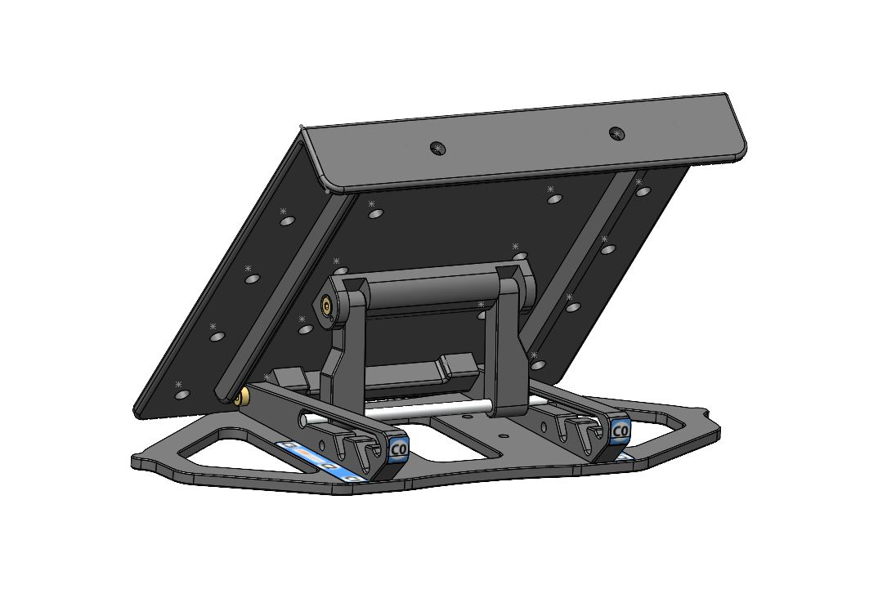
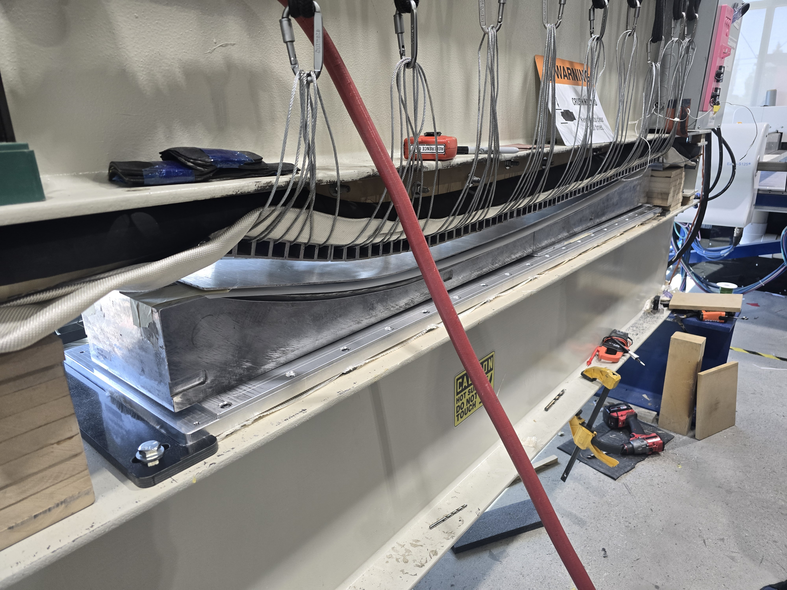
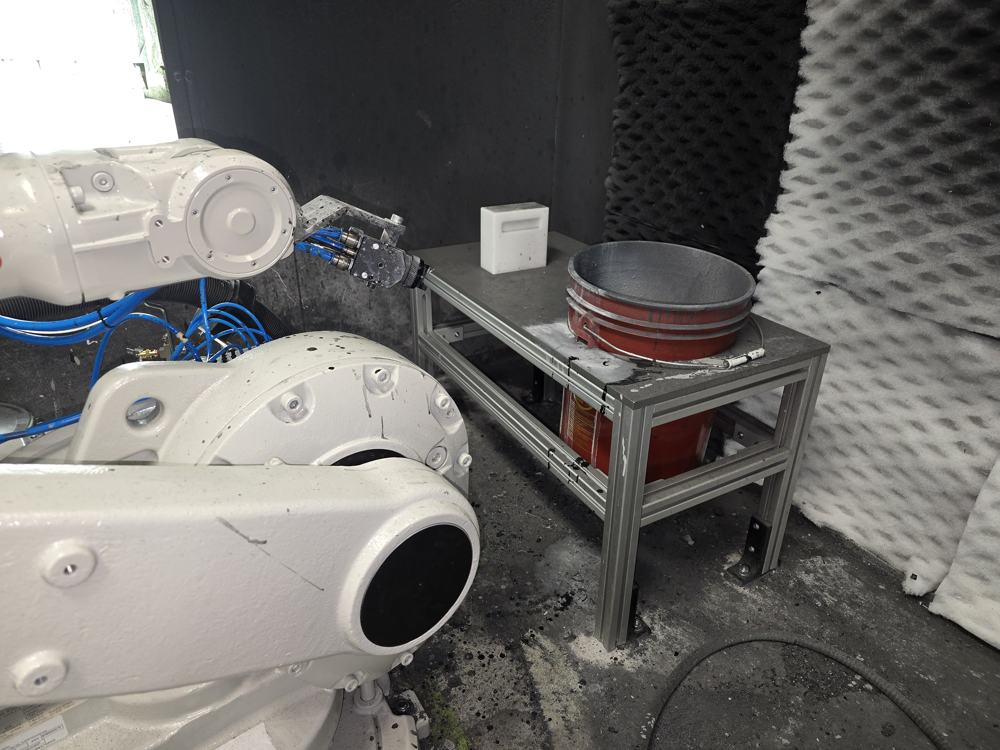
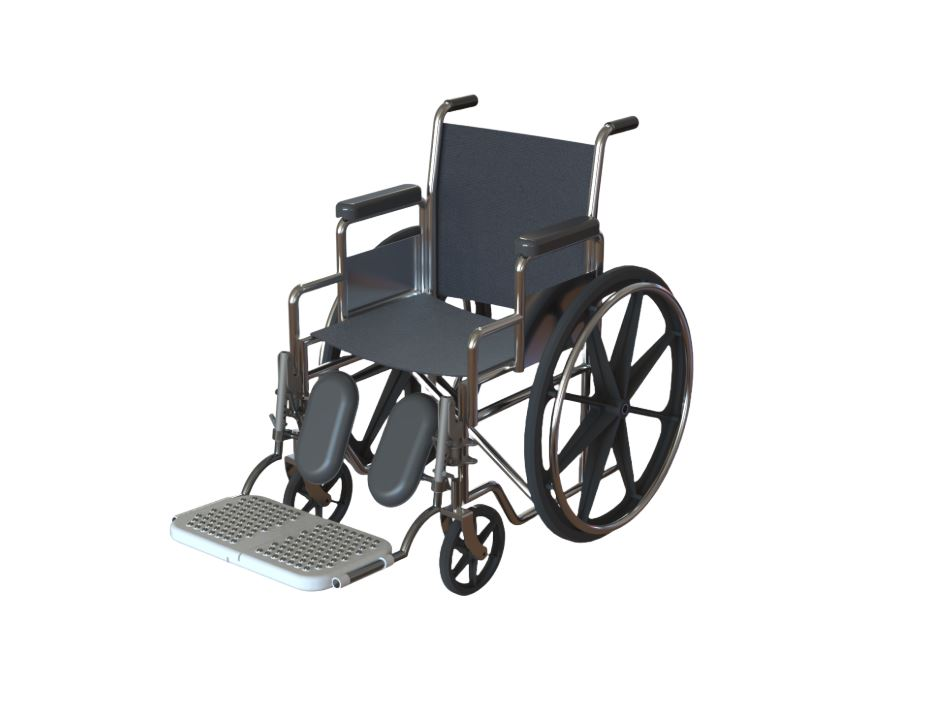
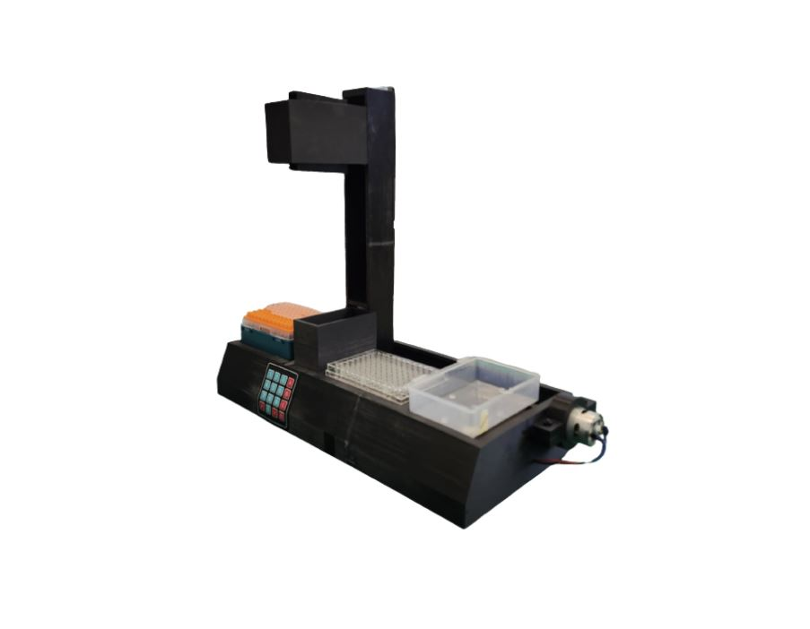

JUSTIN YOON
Biomedical Engineering | The University of British Columbia
Biomedical Engineering | The University of British Columbia
JungKyuJustinYoon@gmail.com
Phone
+1 (778) 881-2431
www.linkedin.com/in/jungkyujustinyoon
Location
Vancouver, BC

I’m a fourth-year Biomedical Engineering student at the University of British Columbia with a particular interest in mechanics, medical equipment, and prosthetics.
My technical experience spans multiple engineering disciplines, from Aerospace engineering where I design and optimize aircraft structures with UBC AeroDesign for SAE international competitions, to engineering medical devices, such as patient positioning devices for radiology treatment. With a strong background in mechanical design, CAD, and rapid prototyping, I'm always exploring new opportunities.
Outside academics, you'll find me hitting the slopes in the lower mainland, capturing moments through my lens, hiking around beautiful British Columbia, and stepping into the UBC Thunderbird mascot suit at campus sports events.
CDR SYSTEMS
Worked as a Mechanical/Product Design Engineering Intern within the Research & Development team, supporting the design, development, prototyping, testing, and manufacturing of medical devices used in radiation therapy. Primary responsibilities included designing CAD models in SolidWorks, making and iterating prototypes, creating engineering drawings and supporting documentation for manufacturing, and working with overseas manufacturers for large scale procurement. My main projects included designing and developing a radiotherapy patient headrest, an adjustable foot support, and a mechanical clip for attaching thermoplastic radiotherapy masks to an indexing board. Iterated designs through prototyping and functional testing to improve usability, manufacturability, and compatibility with existing treatment systems. Additionally, I designed manufacturing tooling including thermal heat presses and vacuum-forming jigs to improve production efficiency, quality, and repeatability. Lastly, designed trade show display stands and other custom fixtures to support company operations.
Dometic
Worked as a Manufacturing & Automation Engineering Intern within the Manufacturing Engineering team, supporting the design, development, implementation, and continuous improvement of manufacturing equipment and production processes for marine boat engine acutators for companies like YAMAHA and Mercury. Primary responsibilities included designing CAD models in Creo Parametric, developing manufacturing fixtures and tooling, creating engineering drawings and technical documentation, and supporting the integration of automation systems into the production line. My main projects included designing and building a calibration station for a six-axis robotic assembly system, developing production fixtures and workstations for new product lines, and modifying existing manufacturing equipment to improve ergonomics, efficiency, and reliability. I collaborated with production, quality, and engineering teams to prototype, test, and validate equipment before deployment on the manufacturing floor. Additionally, I worked to integrate more automation, including programming PLCs and HMIs, and implementing sensors to improve automated manufacturing processes. Assisted with equipment troubleshooting, and developed standard operating procedures, calibration instructions, and preventive maintenance documentation for more consistent production quality.
UBC Aerodesign
Responsible for managing project schedules and assigning research responsibilities within the MCR fuselage team. Also responsible for overseeing the onboarding, training, and mentorship of new members in preparation for the annual competition cycle. Throughout the summer term, I coordinate research initiatives investigating new design concepts, materials, and manufacturing processes to support the development of the team's next-generation aircraft.
UBC Sustaingineering
Contributed to the design and prototyping of decentralized water systems for a Tiny Home Project with UBC Sustaingineering in partnership with BWBF. Developed rainwater harvesting and plumbing layouts, performed pump and structural analyses, and built functional prototypes including a gutter system and compact hydroponics unit
UBC Aerodesign
Involved in designing and developing multiple SAE Aero Design Micro Class aircraft (Romeo 2024, Barbie 2025, Toothless 2026) for UBC AeroDesign. Sized and configured tail geometries using volume coefficient methods, aspect ratio trade studies, and stability requirements, referencing Gudmundsson and precedent aircraft data. Built parametric spreadsheets to determine tail arm, surface areas, and aerodynamic coefficients, and iterated designs to balance stability, weight, and drag. Performed FEA in SOLIDWORKS to validate structural integrity and inform material selection and geometry changes. Manufactured and tested components and subassemblies using carbon fiber, wood, and plastics through 3D printing, laser cutting, and CNC routing.
The University of British Columbia
As the official mascot for UBC Vancouver, I represented the university at hundreds of sporting events, campus activities, and community engagements, energizing crowds through fan interaction, leading chants, and performing stunts for audiences of thousands. Balancing this role alongside a demanding engineering degree, internships, design teams, and competitions improved my time management and communication skills.

.JPG)
.JPG)

.JPG)










.jpg)


.JPG)


.JPG)


.jpg)